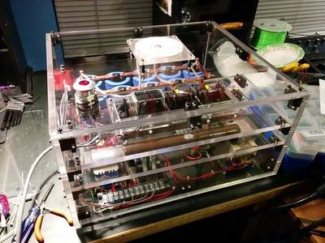

2016-05-12 - Nº 54

Editorial
Esta é a Newsletter Nº 54 que se apresenta com o mesmo formato que as anteriores. Se gostar da Newsletter partilhe-a!
Todas as Newsletters encontram-se indexadas no link.
Esta Newsletter tem os seguintes tópicos:
Esta semana foi feito o primeiro teste com a tecnologia hyperloop. No Nevada e usando motores de levitação electromagnética foi possível deslocar uma composição a 187 Km/h. A Google anunciou e disponibilizou em open-source a sua tecnologia SyntaxNet - implementada usando o TensorFlow permite ler e perceber expressões em linguagem humana. A Disney Research apresentou um sistema robótico que usa um novo tipo de transmissão hidrostática com uma configuração híbrida de ar e agua. Este sistema permite que haja movimentos bi-direccionais nas juntas.
Na Newsletter desta semana apresentamos diversos projetos de maker. Na rubrica "Documentação" apresentamos oito livros (eBooks) que podem ser descarregados livremente e que esta semana são sobre técnicas de soldar componentes em circuitos electrónicos, fundamentos de programação em Python, a Especificação do Javascript, olhando para o nosso planeta como Arte, livro de aplicações de amplificadores operacionais, a "Magia negra" da programação, optimizações usando C++ e decifrando cifras secretas com Python. Foi também publicada a revista newelectronics de 10 de Maio.
 João Alves ([email protected])
João Alves ([email protected])
O conteúdo da Newsletter encontra-se sob a licença  Creative Commons Attribution-NonCommercial-ShareAlike 4.0 International License.
Creative Commons Attribution-NonCommercial-ShareAlike 4.0 International License.
Novidades da Semana ^
Hyperloop One reaches 187kph in first test run
"Hyperloop One has successfully tested its levitating electromagnetic motor for future transport systems at a track in Nevada, USA. The company's electromagnetic sled reached 187kph, as reported by The Guardian, on a short open-air test track before ploughing into a pile of sand – necessary, as the test rig doesn't currently have any brakes. The test, which lasted just a few seconds, was the first demonstration of the much-hyped transportation technology."
Announcing SyntaxNet: The World’s Most Accurate Parser Goes Open Source
"At Google, we spend a lot of time thinking about how computer systems can read and understand human language in order to process it in intelligent ways. Today, we are excited to share the fruits of our research with the broader community by releasing SyntaxNet, an open-source neural network framework implemented in TensorFlow that provides a foundation for Natural Language Understanding (NLU) systems. Our release includes all the code needed to train new SyntaxNet models on your own data, as well as Parsey McParseface, an English parser that we have trained for you and that you can use to analyze English text. Parsey McParseface is built on powerful machine learning algorithms that learn to analyze the linguistic structure of language, and that can explain the functional role of each word in a given sentence. Because Parsey McParseface is the most accurate such model in the world, we hope that it will be useful to developers and researchers interested in automatic extraction of information, translation, and other core applications of NLU."
A Hybrid Hydrostatic Transmission and Human-Safe Haptic Telepresence Robot
"We present a new type of hydrostatic transmission that uses a hybrid air-water configuration, analogous to N+1 cable-tendon transmissions, using N hydraulic lines and 1 pneumatic line for a system with N degrees of freedom (DOFs). The common air-filled line preloads all DOFs in the system, allowing bidirectional operation of every joint. This configuration achieves the high stiffness of a water-filled transmission with half the number of bulky hydraulic lines. We implemented this transmission using pairs of rolling-diaphragm cylinders to form rotary hydraulic actuators, with a new design achieving a 600-percent increase in specific work density per cycle. These actuators were used to build a humanoid robot with two 4-DOF arms, connected via the hydrostatic transmission to an identical master. Stereo cameras mounted on a 2-DOF servo-controlled neck stream live video to the operator’s head-mounted display, which in turn sends the real-time attitude of the operator’s head to the neck servos in the robot. The operator is visually immersed in the robot’s physical workspace, and through the bilateral coupling of the low-impedance hydrostatic transmission, directly feels interaction forces between the robot and external environment. We qualitatively assessed the performance of this system for remote object manipulation and use as a platform to safely study physical human-robot interaction."
Outras notícias
- IDE 1.6.9 JUST RELEASED WITH YÚN SHIELD SUPPORT AND MORE!
- New Automotive Microcontrollers from STMicroelectronics Pave the Way to Smart Driving via More Secure and Connected Cars
- Samsung Electronics Introduces the EVO Plus 256GB MicroSD Card, with the Highest Capacity in its Class
- Scientists Discover New Technology Breakthrough in Fighting Viral Diseases
- Compressonator (AMD Compress) is going open source
- Cayenne - Easy IoT for Raspberry Pi
Ciência e Tecnologia ^
With simple process, engineers fabricate fastest flexible silicon transistor
"One secret to creating the world’s fastest silicon-based flexible transistors: a very, very tiny knife. Working in collaboration with colleagues around the country, University of Wisconsin-Madison engineers have pioneered a unique method that could allow manufacturers to easily and cheaply fabricate high-performance transistors with wireless capabilities on huge rolls of flexible plastic. The researchers — led by Zhenqiang (Jack) Ma, the Lynn H. Matthias Professor in Engineering and Vilas Distinguished Achievement Professor in electrical and computer engineering, and research scientist Jung-Hun Seo — fabricated a transistor that operates at a record 38 gigahertz, though their simulations show it could be capable of operating at a mind-boggling 110 gigahertz. In computing, that translates to lightning-fast processor speeds."
-
"Oussama Khatib held his breath as he swam through the wreck of La Lune, 100 meters below the Mediterranean. The flagship of King Louis XIV sank here in 1664, 20 miles off the southern coast of France, and no human had touched the ruins – or the countless treasures and artifacts the ship once carried – in the centuries since. With guidance from a team of skilled deep-sea archaeologists who had studied the site, Khatib, a professor of computer science at Stanford, spotted a grapefruit-size vase. He hovered precisely over the vase, reached out, felt its contours and weight, and stuck a finger inside to get a good grip. He swam over to a recovery basket, gently laid down the vase and shut the lid. Then he stood up and high-fived the dozen archaeologists and engineers who had been crowded around him."
Stretchable electronics that quadruple in length
"Conductive tracks are usually hard printed on a board. But those recently developed at EPFL are altogether different: they are almost as flexible as rubber and can be stretched up to four times their original length and in all directions. And they can be stretched a million times without cracking or interrupting their conductivity. The invention is described in an article published today in the journal Advanced Materials. Both solid and flexible, this new metallic and partially liquid film offers a wide range of possible applications. It could be used to make circuits that can be twisted and stretched – ideal for artificial skin on prosthetics or robotic machines. It could also be integrated into fabric and used in connected clothing. And because it follows the shape and movements of the human body, it could be used for sensors designed to monitor particular biological functions."
Blue Light Exposure Reduces Organ Damage in Mice, CRISMA Researchers Find
"New research published in the Proceedings of the National Academy of Sciences on April 25 points to an intriguing correlation between pre-surgical exposure to blue light and improved outcomes in mice, specifically a reduction in inflammation and organ damage. The article, “Blue light reduces organ injury from ischemia and reperfusion,” was senior authored by Matthew R. Rosengart, MD, MPH, Associate Professor in the Department of Surgery and a secondary faculty member in the Department of Critical Care Medicine. This research was performed in the Department of Surgery and the CRISMA Center, Clinical Epidemiology Program, Department of Critical Care Medicine. This finding, which is one of the first to consider the complexity of light, builds on early observational studies on the potential role of light in critical illness led by former CRISMA fellow Ricardo Castro, who was mentored by Rosengart and Derek C. Angus, MD, MPH, FRCP, Director of the CRISMA Center and coauthor of the research."
Microsoft Joins Hands with Twist Bioscience to Store Data-Using Synthetic DNA
"Microsoft has struck a contract with Twist Bioscience - a new forensic startup to develop and use synthetic DNA strands to store information so that data can be safely stored for thousands of years. The company purchased 10 million molecules from the startup. According to IEEE, the company has successfully transferred a chunk of data on the DNA or RNA molecules, and has also extracted the information successfully. Microsoft collaborated with Twist Bioscience and together, they sequenced the 10 million molecules accordingly. Twist Bioscience does not have any information stored on the stands, however, in order to extract and decode the information, DNA sequencing is needed and it doesn’t have the key to do so."
Graphene-Based Microbots for Toxic Heavy Metal Removal and Recovery from Water
"Heavy metal contamination in water is a serious risk to the public health and other life forms on earth. Current research in nanotechnology is developing new nanosystems and nanomaterials for the fast and efficient removal of pollutants and heavy metals from water. Here, we report graphene oxide-based microbots (GOx-microbots) as active self-propelled systems for the capture, transfer, and removal of a heavy metal (i.e., lead) and its subsequent recovery for recycling purposes. Microbots’ structure consists of nanosized multilayers of graphene oxide, nickel, and platinum, providing different functionalities. The outer layer of graphene oxide captures lead on the surface, and the inner layer of platinum functions as the engine decomposing hydrogen peroxide fuel for self-propulsion, while the middle layer of nickel enables external magnetic control of the microbots. Mobile GOx-microbots remove lead 10 times more efficiently than nonmotile GOx-microbots, cleaning water from 1000 ppb down to below 50 ppb in 60 min. Furthermore, after chemical detachment of lead from the surface of GOx-microbots, the microbots can be reused. Finally, we demonstrate the magnetic control of the GOx-microbots inside a microfluidic system as a proof-of-concept for automatic microbots-based system to remove and recover heavy metals."
Documentação ^
A documentação é parte essencial do processo de aprendizagem e a Internet além de artigos interessantes de explorar também tem alguma documentação em formato PDF interessante de ler. Todos os links aqui apresentados são para conteúdo disponibilizado livremente pelo editor do livro.
Livros
Soldering is easy - here's how to do it
"This seven page comic book explains in detail and with pictures how to make a good solder connection. It also teaches you all the other bits and pieces of knowledge that you need to successfully solder together an electronic kit, even if you’ve never soldered before!"
Fundamentals of Programming Python
"A computer program, from one perspective, is a sequence of instructions that dictate the flow of electrical impulses within a computer system. These impulses affect the computer’s memory and interact with the display screen, keyboard, mouse, and perhaps even other computers across a network in such a way as to produce the “magic” that permits humans to perform useful tasks, solve high-level problems, and play games. One program allows a computer to assume the role of a financial calculator, while another transforms the machine into a worthy chess opponent."
ECMAScript® 2015 Language Specification
"This Ecma Standard defines the ECMAScript 2015 Language. It is the sixth edition of the ECMAScript Language Specification. Since publication of the first edition in 1997, ECMAScript has grown to be one of the world’s most widely used general purpose programming languages. It is best known as the language embedded in web browsers but has also been widely adopted for server and embedded applications. The sixth edition is the most extensive update to ECMAScript since the publication of the first edition in 1997."
-
"In 1960, the United States put its first Earth-observing environmental satellite into orbit around the planet. Over the decades, these satellites have provided invaluable information, and the vantage point of space has provided new perspectives on Earth. This book celebrates Earth’s aesthetic beauty in the patterns, shapes, colors, and textures of the land, oceans, ice, and atmosphere. Earth-observing environmental satellites can measure outside the visible range of light, so these images show more than what is visible to the naked eye. The beauty of Earth is clear, and the artistry ranges from the surreal to the sublime. Truly, by escaping Earth’s gravity we discovered its attraction. "
Handbook of operational amplifier applications
"While in the process of reviewing Texas Instruments applications notes, including those from Burr-Brown – I uncovered a couple of treasures, this handbook on op amp applications and one on active RC networks. These old publications, from 1963 and 1966, respectively, are some of the finest works on op amp theory that I have ever seen."
-
"A guide to computer programming. Covers the basic material from a Computer Science course. Recommended for beginners and intermediate programmers. Contents: Program Structure; Topics from Computer Science; The Craft of Programming."
-
"This is an optimization manual for advanced C++ programmers. Topics include: The choice of platform and operating system. Choice of compiler and framework. Finding performance bottlenecks. The efficiency of different C++ constructs. Multi-core systems. Parallelization with vector operations. CPU dispatching. Efficient container class templates. Etc."
Hacking Secret Ciphers with Python
"The book teaches complete beginners how to program in the Python programming language. The book features the source code to several ciphers and hacking programs for these ciphers. The programs include the Caesar cipher, transposition cipher, simple substitution cipher, multiplicative and affine ciphers, Vigenere cipher, and hacking programs for each of these ciphers. The final chapters cover the modern RSA cipher and public key cryptography."
Revistas
-
"New Electronics is a fortnightly magazine focusing on technological innovation, news and the latest developments in the electronics sector. Downloadable as a digital page turner or pdf file, or offered as a hard copy, the New Electronics magazine is available in a format to suit you."
Modelos 3D ^
Com a disponibilidade de ferramentas que permitem dar azo a nossa imaginação na criação de peças 3D e espaços como o thingiverse para as publicar, esta rubrica apresenta alguns modelos selecionados que poderão ser úteis.
Math Gear(s)
NEW VERSION!!! POSTED 12-29-13 At first glance the updates are barely noticeable, but every piece has been revised. The changes make assembly easier with better fit and smoother operation.
This Math manipulative is designed to appear playful from the first look. It lies flat on desk top, so it will also work well with overhead projection systems.
Behind the mechanical fun there are several simple ratio exercises. The eight tooth "Idler" gear is supplied to add reverse rotation without affecting the ratios. Each interchangeable gear has built-in graphics to indicate the number of teeth as well as rotation position. Some gear ratio formulas can be found here: http://en.wikipedia.org/wiki/Gear_ratio.
Rubber bands provide tension to keep the wheels engaged no matter what the combination.
FYI, the "T" on the gears stands for "teeth".
Hobby Clamps
Fully printable, functional mini clamps. Capable of maintaining up to five pounds of clamping force.
Mini Clamp with 85mm clamping capacity
Mini Spreader Clamp with 110mm capacity
Changes made:
Slightly shorter to better fit the TOM build platform
Jaw changed to slide more easily on Bar
Lip added to Jaw and to Wedge for easier one handed clamping/unclamping.
Three more sizes of Wedges. Wedge2 is the standard size. If the jaw fits too loosely or too tightly, try one of the other sizes. The "ClampWedges" file has one of each size of wedge so that you can test the different fits.
Added the Spreader Clamp
Added 140mm blank Bar
Drill bit sharpener
I've researched many existing approaches to drill bit sharpening but did not find one that I like. I like simple and utilitarian designs. This is one of those: a one-piece guide for sharpening drill bits on a Dremel or similar rotary tool.
There are 3 guides included: 90, 118 and 135 degrees. The majority of people will need the 118* and for that the adapter comes in two sizes such that it can easily fit both small and large diameter drills, as well as different diameters in cutting/grinding disks.
The adapter prints in one piece without support and is threaded to screw right onto the Dremel (I've tested it on Dremel 285, 8000 and generic Alltrade tool). It's also designed to accommodate mandrel upgrades.
Feel free to tweak but note the non-commercial use, please contact me for a separate license if you are interested.
https://youtu.be/Z6N5WAULoEM
Projetos Maker ^
Diversos Projetos interessantes.
-
"The module based on DS1307, The DS1307 serial real-time clock (RTC) is a low-power, full binary-coded decimal (BCD) clock/calendar plus 56 bytes of NV SRAM. Address and data are transferred serially through an IC, bidirectional bus. The clock/calendar provides seconds, minutes, hours, day, date, month, and year information. The end of the month date is automatically adjusted for months with fewer than 31 days, including corrections for leap year. The clock operates in either the 24-hour or 12-hour format with AM/PM indicator. The DS1307 has a built-in power-sense circuit that detects power failures and automatically switches to the backup supply. Timekeeping operation continues while the part operates from the backup supply."
Firmware Over The Air (FOTA) for ESP8266 SoC
"With the IoT booming nowadays, the number of connected devices grows exponentially and so does the related software that drives them. There is no doubt that Firmware Over The Air (FOTA) is a highly desirable if not required feature for any embedded project/product both DIY or commercial. Being able to provide a remote firmware update is obviously very beneficial. The opportunity here is to enhance product functionality, operational features and provide fixes for particular issues. Updating the firmware OTA may eliminate the need to bring a product into a service center for a repair. Although not every issue can be resolved with a firmware update, if one is available for a particular issue, it can save a lot of time and money."
USB to UART Converter with GPIO MCP220
"The Module is based on The MCP2200, which is a USB-to-UART serial converter which enables USB connectivity in application that have a UART interface. The device reduces external components by integrating the USB termination resistors. The MCP2200 also has 256-bytes of integrated user EEPROM. The MCP2200 has eight general purpose input / output pins. Four of the pins have alternate functions to indicate USB and communication status."
ESP 8266 Wifi controlled Home Automation
"ESP8266 is a great thing for starting to Wifi And IOT. It is also cheap and be used for making cool projects connected to the Internet .Learn how to make a simple IOT Project with it .The ESP8266 WiFi Module is a self contained SOC with integrated TCP/IP protocol stack that can give any microcontroller access to your WiFi network. The ESP8266 is capable of either hosting an application or offloading all Wi-Fi networking functions from another application processor. Each ESP8266 module comes pre-programmed with an AT command set firmware, meaning, you can simply hook this up to your Arduino device and get about as much WiFi-ability as a WiFi Shield offers (and thats just out of the box)! The ESP8266 module is an extremely cost effective board with a huge, and ever growing, community."
Build a 2-Digit Up/Down Counter with a PICAXE 20M2
"The project in this article makes use of a PICAXE 20M2 microcontroller. If you are familiar with this family of c's, jump right in, but if you need a little background info or refresher training, you can find a series of PICAXE articles (including tutorials) here."
Raspberry pi plant watering system
"This is how you make a raspberry pi assisted watering system for your plant(s). The raspberry pi has a database with settings for the most usual household herbs, and a frontend that you can connect to from your computer. From this front-end, you can edit the info of what plants are connected, how much watering they need, etc."
-
"My wife and I were sitting together in my office recently and as usual the 3D Printer was churning away. Much to our surprise, and this has not happened before or since, the electronics stack started to smoke quite actively! It turns out that one of the fuses at the top of the board had blown. Puzzling as they are supposed to be self-resetting and they are not supposed to smoke to the point of flames! It did NOT reset and it DID smoke!"
-
"I have a small lithium emergency charger for my cell phone. I carry it in a small pouch with a bunch of assorted charging cables... It does a decent job in an emergency for my phone. I can add 60-70% charge before it gives out. Perfect to make sure I get picked up from the bus stop after work. I tried running a raspberry pi but it only lasted a couple of hours. I needed something bigger."
Solar Tracking Weather Station
"This Instructable will give you the basic guidelines for replicating my project. This is a combination of two Instructables I saw, and I decided to put them together. Check it out!"
Neopixel Ampli-Pelz Tuxedo Lights
"Will you be king of the prom or just prince? Bask in the purple glow or in any color of the rainbow. Mod your tuxedo jacket(rented or not), regular suit jacket or blazer lapels to light up. For partying purposes, the neopixel LED lights respond to sound."
HullPixelBot: A robot pixel from Hull
"Welcome to HullPixelBot. A slow moving, easy to make, Arduino powered, tiny robot."
master clock driver for antique slave clocks
"Big old wall clocks that were used in facilities such as schools, factories and hospitals are very appealing and will probably never go out of style. They are very durable and almost never break down due to very simple mechanism they have. This mechanism is actually pretty simple, it is just an impulse motor (two coils) and a couple of gears - no further complications. This is a blessing and also a curse for these antique clocks because for their operation they now require something called a master clock. Master clock is an electronic device that sends pulses to these slave clocks so that they can work."
6 Digit Serial Display Driver with CAT4016
"6 Digit serial display project has been designed around CAT4016 IC from ON semi. The CAT4016 is a 16 channel constant current driver for LED billboard and other general display applications. LED channel currents are programmed together via an external RSET resistor. Low output voltage operation on the LED channels as low as 0.4 V (for 2 to 100 mA LED current) allows for more power efficient designs. A high-speed 4-wire serial interface of up to 25 MHz clock frequency controls each individual channel using a shift register and latch configuration. A serial output data pin (SOUT) allows multiple devices to be cascaded and programmed via one serial interface. The device also includes a blanking control pin (BLANK) that can be used to disable all channels independently of the interface. Thermal shutdown protection is incorporated in the device to disable the LED outputs if the die temperature exceeds a set limit."
3D printed Google Cardboard kit
"Google Cardboard a device that allows you to discover the world of Virtual Reality. And you went to the 3D movies? Wore special glasses? We shy away from flying into your face arrows, stones, sharp-toothed sharks and cute squirrels? Liked? Yes, for me!"
DIY Bench Power Supply (Dual-Channel)
"Every electronic hobbyist needs a variable power supply for prototyping and testing, but they can be very expensive. I will show you how to build a cheap yet reliable power supply."
Plug And Play remote relay (Raspberry and Arduino and reading sensors)
"The goal was to create easy to use End to End control over power sockets using relay, including (and maybe mainly) Web GUI and automation. As always I try to use existing solutions and rely as little as possible on specific platforms. A Plug&Play solution and I just added sensor reading as ell."
Do-It-Yourself Soldering Station with an ATmega8
"What is one of the most essential tools in an electrical engineers kit? Ill tell you one that you probably love and hate; the soldering iron. You dont have to be an EE to need one, you'll need one even if you're just a tinkerer who enjoys repairing stuff around the house. For basic applications, a standard soldering iron that you plug into the wall does the job, but for more sensitive work like repairing and building electronic circuits, you'll need a soldering station. The temperature control is critical as to not burn the components, especially the integrated circuits. In addition, you may also need it to be powerful enough to maintain a certain temperature in case you find yourself a big ground plane that you want to solder to. As a student attending University far from home, I found that it was impractical to uninstall my soldering station from my workbench to bring it back and forth when I visit home. I decided that it was best to get a new one, or better yet, build a new one."
OpenDrop Digital Microfludics Plattform
"OpenDrop is a new design for an open source digital microfludics platform for research purposes. The device uses recent electro-wetting technology to control small droplets of liquids. Potential applications are lab on a chip devices for automating processes of digital biology. How ever the present design should also open the technology to other field and allow experimentation to find new applications. Including the field of art, music, games and education."
DIY CNC Accessories (Dust Collector, Heatsinks, Feet, Pendant)
"I thought I'd share the accessories that I've made for my CNC machine. They get plenty of use and most are easy to make. I used a Dremel 3D printer and a Printrbot Metal to make the 3D printed parts. The CNC is a 3040 machine but I also used a Harbor Freight (Seig) Mini Mill and, of course, I threw in an Arduino "just becasue"."
Low cost OBD2 communications on K-line (ISO 9141-2 and ISO 14230-4)
"This is just another OBD2 solution for monitoring the sensors in a verhicle. It supports the K-line OBD2 serial communication between a verhicle and a microcontroller. This K-line communication is also known as ISO 9141-2 or ISO 14230-4 (also known as Keyword Protocol 2000 or KWP). Both ISO's are almost similar. This solution differs from the rest that is low cost. It is low cost in the way that you don't need an arduino, raspberry pi or smart phone. Just a microcontroller and LCD display so you can use your smartphone for other purposes."
-
"This instructable was created in fulfillment of the project requirement of the Makecourse at the University of South Florida (www.makecourse.com) Thank you for viewing my instructable on the powered camera slider. Before starting, I would like to note that a majority of this project was machined with a 3 axis milling machine. I designed this project to be accurate for the best filming results. I realize most people do not have access to one, but if you do, this is just for you!"
DIY electronic RFID Door Lock with Battery Backup

"The advantage of an electronic door lock is that the above security issues do not apply. It is much better to have a safe door lock which prevents that the thief can enter than to have an alarm system which makes noise when the thief is already in. Until the police arrives he will be gone and probably some precious things will be missing. Secure locks are always better than alarm systems or cameras."
Reverse engineering the popular 555 timer chip (CMOS version)
"This article explains how the LMC555 timer chip works, from the tiny transistors and resistors on the silicon chip, to the functional units such as comparators and current mirrors that make it work. The popular 555 timer integrated circuit is said to be the world's best-selling integrated circuit with billions sold since it was designed in 1970 by analog IC wizard Hans Camenzind[1]. The LMC555 is a low-power CMOS version of the 555; instead of the bipolar transistors in the classic 555 (which I described earlier), the CMOS chip is built from low-power MOS transistors. The LMC555 chip can be understood by carefully examining the die photo."
Web Server Scada SVG ESP8266 Random value with 6V Battery
_"This tutorial is divided into 2 in which it is explained how to design a mini SCADA or graphical representation of a process in this case a tank which displays the variable level 0 to 100% was created.
!!! The web server will be located in Module ESP8266 which publishes an HTML page which in turn designs SVG file hosted on the server."_
-

"Have you ever wanted to shoot disks of aluminium forty five feet into the air at the press up a button? Do you like experimenting with high energy physics, and learn about things such as impulse generators, charge circuits, Lorentz force, electromagnetic induction, and how to build this all in a form which is safe, and looks sharp. Well if you are like me, the answer to all of these questions is yes. Which is why I set out to build a ring launcher demonstration project, which I have named Hathor, named after the Egyptian goddess of the sky. Project Hathor is a 2kV ring launcher, built for SYN Shop. It's designed to launch rings, i.e. aluminum hard drive platters, by generating a large magnetic pulse."
-
"Have you ever wanted to build a mechatronic but didnt have the resources to do so? Fear no more! You dont really need fancy expensive tools to do so. In this project we will explain how we built a mechatronic face with very simple tools. To be fair it does pretty basic movements, it moves the eyes up and down and left to right and the jaw also moves up and down, however this project shows that you dont need much to do pretty cool stuff. When we were planning how to build this mechatronic, we made a model of the face in Autodesk Maya to give us an idea of how to piece it together and of how it would work. Later, while we were building it, we made some changes (mostly to how the jaw would be moved)."
-
"Some time ago I grew tired of my wife asking if she had to leave soon to get to the metro in time. I did what any sensible techie would and made her a battery powered countdown clock. The clock counts down to a selectable time, and repeats the countdown every 15 minutes (the normal interval for the metro over here). Three minutes before it is time to leave, the clock display starts flashing slowly to get your attention. Then, once you should have left, the clock counts UP, blinking fast, as you still have time to make it if you walk briskly. Once your time is TRULY up the countdown to the next metro starts."
-
"My family and friends are increasingly spread out across the country or even across the globe and keeping in touch can be a problem. This is especially true for someone like myself who doesn't really like to talk on the phone much. In addition, there are problems with people's hectic life styles and conflicting schedules. When you think of your friend or family member you may be too busy to call them that instant or if you do they may be to busy talk. Thus the spontaneity of the thought can and usually does fade away. I was thinking about these issues in relation to my sisters who are located across the US. I wanted something that would virtually instantaneously let my sisters know I was thinking of them but that was totally non intrusive. I wanted them to know without having to disrupt what they are doing with a phone call or text message. And vice versa, when the thought struck them they could let me know they were thinking of me as well. With these thoughts in mind I designed what I call a Thinking of You or ToY device. These are small Internet connected devices meant to be used in a home, apartment or work place. They should be placed on a desk at the office or in the living room at home where they can easily be seen and interacted with. Each ToY device has a single push button switch and an RGB LED for user interaction."
Make Your Own LED Sign VU Meter
"In this project I will show you how to create a custom LED sign that reacts to the loudness of your music, just like a VU meter does."
Control ANY light or electrical appliance with you tablet or smartphone (wifi)
"In this tutorial we will be making something I call a wifi controlled ac switch. (But it also works for DC applications that are powered by a wall outlet) Basically we will make a small box that can control any ac electric current in your home, based on commands from your tablet or smartphone. On top of that it can be programmed to react to input from any kind of sensor. Tailored to your needs and limited only by your imagination. The total cost of the project is between 5 and 25 depending on what you have lying around at home."
-
"In this Instructable I will attempt to explain how to create a home automation server that has the facility to allow common household electrical items to plug in to a common 5-way 240VAC/120VAC power strip. In my design I have included an 8-way relay board that uses 4 relays to switch 4 of the 5-way power strip outlets, with the remaining 4 relays available for hard-wiring more external devices. These relays will be able to be switched over the internet, or on a home network."
-
" am writing this instructable because i have got issue how to test a LED when we are building led cube ,where we have to test the leds before fixing in the cube ,we have every time we have to fix a resistor to LED and connect it to 9V battery or LED+Resistor to a five volts power source i.e; adaptor or 7805 regulator power"
Cheap retro gaming arcade table
"Cheap retro gaming arcade table with integrated display"
Hacking a RC car with Arduino and Android
"Whenever I walk into a toy store and see remote control cars in the window, I'm dying to take them home, must be because I adored this kind of toy, but for lack of options and money, did not get to have a when I was a child. To compensate and have an excuse to buy it, we will dismantle one of these, racking its main parts and replacing the original embedded electronic by an Arduino controlled remotely by an Android device. Thus, it will be very easy to add new features to the toy, like sensors for example. It is a very inexpensive way to build a robot for educational use."
-
"Repetitive cutting for projects that require precision parts can be a time-consuming process. The need for consistency and accuracy in making several hundred cuts from small diameter pipes prompted sculptor HTMF Metal Pizza to seriously upgrade his DIY production line."
-
"I want to be able to run openCPN on both a laptop and a tablet at the same time. I would like the laptop down below deck, safe from the rain and salt water spray. I would like to have a mostly waterproof tablet in the cockpit to monitor progress. And I would like to be able to quickly check the ships status from the captains berth when off watch, maybe on a smart phone. The plan is to implement a device to read the serial data from all the boat instruments and send that data to openCPN over a WiFI link so there are no physical wires attached. It will broadcast the data with UDP so that multiple devices can read the data at the same time. The ESP8266 ESP-01 was chosen because it was on hand and it has adequate I/O for this project."
Use Solenoids to Build a MIDI-Controlled Percussion Bot
"Percusso isnt a real set of percussion instruments and its probably too noisy to accompany serious music. But its a ton of fun to play with, and can suggest some creative licks. Some sounds are recognizable the snare drum (The Laptop by Rhythm Tech), the maraca, a triangle, and a shaken tambourine but thats about it. The other instruments BBs in a tomato sauce can, a 4-sided block, popcorn in a Chobani yogurt container, a mallet and damper for the tambourine, Tic Tacs, and my editors favorite, a red mallet hammering on a 10 pizza box mostly just make interesting noises."
12V to 28V Step Up DC-DC Converter
"The Step-Up DC-DC Converter project provides 28V, 175mA output with input of 12V DC. The MC34063A IC is heart of the project from On semiconductor. The MC33063A is a monolithic control circuit containing the primary functions required for DC-DC converters, This device consist of an internal temperature compensated reference, comparator, controlled duty cycle oscillator with an active current limit circuit, driver and high current output switch. This IC specially designed to be incorporated step-down, step-up, and voltage-inverting applications with minimum number of external components."
ESP8266 + Confused.com Brian Toy Robot
"I thought it would be fun to add an ESP8266 to a Brian toy robot from confused.com to play the voice samples that are usually played when pressing the confused.com button on the front of the toy. The ESP8266 will be powered by a single cell lipo that I got with a quad copter, but everything for this build should be pretty easy to get your hands on."
IoT: Connecting the RPi, Arduino and the world!
"In this project, we will program a RPi and an Arduino, to work together to capture data from sensors, sending them to the Web."
Automatic cymbals from old printer
"Hi everyone! I want to show you how to make an automatic cymbals from old pinter parts."
Control Home Appliances with Phone and Internet of Things under 6 $
"I always wanted to turn on my Tv while laying on my couch, Or after a tiresome day when i finish reading a book , to turn off my Light. I did this before with a Hc-05, and tv remote ."
DIY Intelligent Autonomus Robot (Electronic Pet) /w Arduino
"I love every kind of robots especially the autonomus or intelligent robots, that have a bit more intelligence than avoiding an obstacle. So I decided that I'll build my own inexpensive intelligent robot that has a build in camera, distance sensors, light sensor, sound sensor, lights, solar charger, battery level sensor, IR sensor and arms (that can hold or push anything) and with the help of these sensors and the software this robot became highly intelligent. This four wheel drived robot behaves like a real pet. :) With its solar panel can charge up the build in batteries at any time, when is discharged, then moves away automatically to explore the world with its FPV camera. Well isn't as smart like a cat, it's more similar to a MARS rover, but can react to sounds and with his arms and sensors can deliver anything automatically. Yes, can deliver tiramisu..."
-
"A UV exposure box is an extremely useful piece to make PCBs. I have searched and found that they are too big and too expensive for my uses. In addition, all the devices require an external power sorce. Thereupon I decided to build one that fits better on my needs."
-
"This project mixes the perfect beverage with style and class. We split this up into two separate projects because this one is a bit more advanced than the last. Welcome to the Robot Arm Mixologist. This project utilizes a RobotGeek Snapper Arm with a Pumping Station to mix liquids from multiple containers. We will be using a Demo code to show off how to make alterations to the code generated by the Arm Link Software. We will use this to program the arm's movements."
-
"My friends were talking over brunch once day about how cool (and how terrifying) it would be if a person you are chatting with (maybe at a party or on a date) could actually see when your pulse quickens, providing a window into your feelings of excitement or nervousness. Seemed like a fun and ridiculous idea, so i made the (prototype) Heart Rate Party Pendant, a pendant that shows your live heart rate! "
-
"If you are an homebrewer you know how is boring to bottle 60 or more liters. And you also know how a good bottle filler is expensive. When I say a good bottle filler i mean one whith at least 3 valves to fill your bottles, a pump to initiate the flow and a way to stop the flow when the bottle is full. This kind of stuff cost 2600 in Europe. Soooo, i'll will explain you how to make a very cheap and versatile bottle filler with an arduino. According to your need you can add more or less valves, i tried the system with 2 and it's working well, so now i'll be make it for 6. All my code and schematics are doing for 6 valves, but you can use them for less. But if you want more you'll need to change some parts!"
MSP430 VFD Clock Manhattan Style
"I wanted to do a follow-up to my last clock build, the MSP430 Analog Gauge Clock, reusing some of the code from that project, and I had an IV-18 vacuum florescent display (VFD) tube that I bought on Ebay. Also, I wanted to finish the project before Christmas break was over. That didnt happen. But I did manage to get the code written and most of the hardware built. I didnt have the right parts on hand to build a boost converter to provide the 50V or so needed to drive the VFD, and school was about to start, so I decided to put that off until later, as adding an open-loop boost converter circuit using a PWM signal from my MSP430 would be pretty trivial. Ive finally finished the project, and decided to do a write-up."
Hack a humidifier with an AtTiny
"This is a refreshingly simple hack on which I spent only a few hours, most of which were actually for installing Atmel Studio to program the AtTiny."
Arduino "Pick N Place" Android Robot
"Pick N Place robot is a basic level robot for beginners and leaders to learn all about the laws & concepts of Physics, Electronics & Mechanics hence it helps one to inherit this knowledge as one is implementing it. It helps you to get a feel of what robotics is all about."
Arduino Ping pong with 8*8 Dot matrix & Max7219
"There are lots of Arduino ping pong tutorial over the internet. But most of them are for two players .As have no one to play with me so i was find a tutorial which is for single player .Luckily i have found one but that is not that clear and didn't contain so much information .So i decided to write a tutorial so that u guys who are single like me can build a ping pong and pass your time."
-
"The laser harp is an electronic instrument that is played by blocking laser beams. Several laser beams are produced, and a note is played when one of the beams is blocked by the player, similar to plucking a stick on a real harp. The device must therefore produce a laser beam for each note and also have a sensor for determining when a beam is blocked."
That's all Folks!